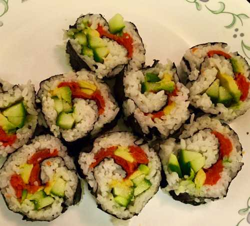

                                    <figure class="cards double">
                                        <figcaption class="caption">
                                            <h1><span style="color: #4897cc;"><strong>Sushi</strong></span></h1>   
                                            <strong>ingredients </strong></p><ul><li>1 cup sushi rice</li><li>1/4 cup rice vinegar</li><li>1/2 tbsp sugar</li><li>1 tsp salt</li><li>1/2 cucumber</li><li>1 avocado</li><li>100 gms smoked salmon. Alternately can use crab meat</li><li>2 sheets of seaweed&nbsp;</li></ul><p>&nbsp;<strong>Preparation</strong></p><p>Cook the rice with two cups of water . Mix the rice vinegar, salt and sugar. Add the mixture to the cooked rice and mix thoroughly and let it cool. Take a bamboo mat and rap it with plastic rap. Spread one seaweed sheet ( approximately 6/6 inch) on the mat. Wet your hands and spread a thin layer of the rice on the seaweed sheet. Cut the cucumber and smoked salmon into juliennes and place them on the rice. Cut the avocado in to half and throw away the seed. Scoop the avocado out of the skin and cut them into thin slices and place them on the rice. Keep filling the spread rice in line alternating avocado, cucumber and salmon. Leave about one cm space at both edges . Roll the bamboo mat and press into a tube shape and slowly lift away the mat leaving the sushi roll. Cut the roll into slices.</p>
                                        </figcaption>
                                       
                                    </figure>
                                   